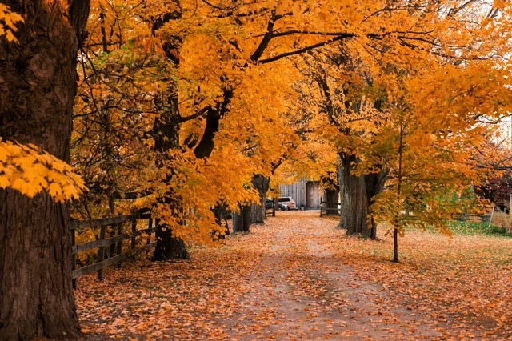
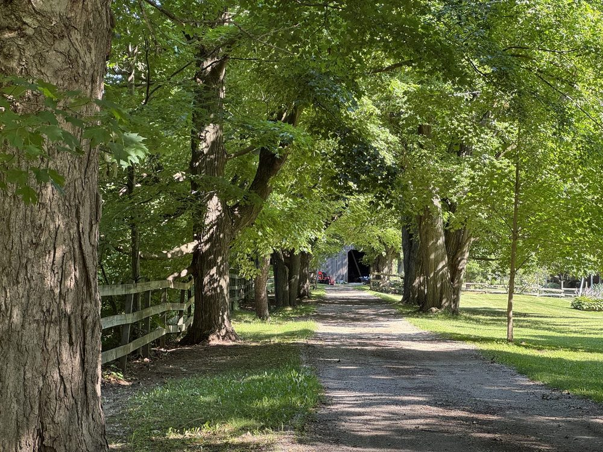

now
august 2026. toronto is running out of summer.
thinking about
models are getting smart enough that the usual benchmarks miss the thing i actually care about. my working definition of intelligence is pattern recognition plus saying the useful thing unprompted, like connecting something i mentioned a few weeks ago to what i'm asking now, without being told to. so i'm building my own benchmark out of my own conversation history, to measure exactly that.
and ai is here to stay, so we may as well get good at using it. what that really does is put taste in all-time demand. everyone can make a website now, an app, working code. that used to be the hard part and it isn't anymore. so what separates people is whether they can tell what's actually good.
reading
bruno munari, design as art. written in 1966 and it reads like last week. short chapters, mostly about ordinary objects. there's one where he takes apart why an orange is a nearly perfect piece of design. given everything above, it is landing hard.
home
finally bought an espresso machine. the era of brewed coffee is over, for now.
day trips
this has been the summer of the day trip. hamilton for dundas peak, then over to kilbride to stand in the spot where the windows xp "autumn" wallpaper was shot. same fence, same barn at the end, just green instead of orange. elora, tubing the gorge through actual rapids, the best $55 i spent all summer. rockwood, kayaking the eramosa past limestone caves. the scarborough bluffs. further out, nova scotia and montreal. the formula is short walks, big payoffs, and good food on the way home.


listening
all over the place. fleetwood mac, heartbeat city, part time, naked eyes. seal? chaka khan? aphex fucking twin?